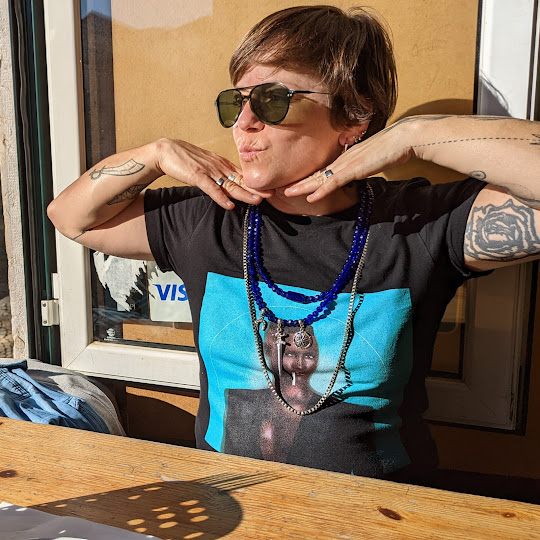

About me
Hi! I'm Vivi.
Since my childhood, in the late 1980s, I have been passionate about "muffins". Every time I went to the bakery, the muffins captured my attention. They were delicious, but they only had two flavours: chocolate and vanilla.
After many years, cupcakes entered the scene! They were impressively colourful and offered a wide variety of flavours for enthusiasts like me.
At that point, I developed a strong desire to learn how to make them, to discover recipes, and to explore other delicious options. I became quite skilled at it, and I decided to start my own small cupcake business!
